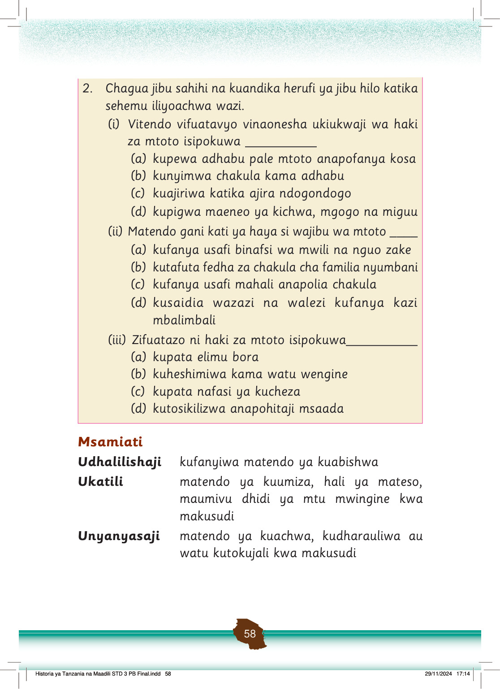

Sura ya Nne
Matendo ya kuthamini maadili
Utangulizi
Katika sura hii utajifunza matendo ya kuthamini maadili kama kuheshimu wengine, kutii sheria na kujithamini.
Pia, utajifunza matendo ya kujali na kushirikiana na watu wengine nyumbani na shuleni.
Umahiri utakaoupata utakuwezesha kujenga uhusiano mzuri na watu wengine katika jamii inayokuzunguka kwa kutenda matendo ya kimaadili.
Kisanduku cha Fikiri chenye ujumbe: Matendo yanaoonesha kuthamini maadili.
Fikiri
Matendo yanayoonesha kuthamini maadili.
Kuthamini maadili ni hali ya kuonesha mwenendo mzuri kwa kutenda matendo yanayokubalika katika jamii husika.
Kuthamini maadili hutuwezesha kujenga uhusiano mzuri na watu wengine katika jamii inayotuzunguka, shuleni na nyumbani.
Kuheshimu watu wengine
Kutenda matendo ya kuheshimu watu wengine ni kitendo cha kuthamini maadili.
Matendo ya kuheshimu watu wengine yanaweza kufanywa kwa ama kwa kuonesha utii, kusalimia, kusaidia kazi au kujali watu wengine.